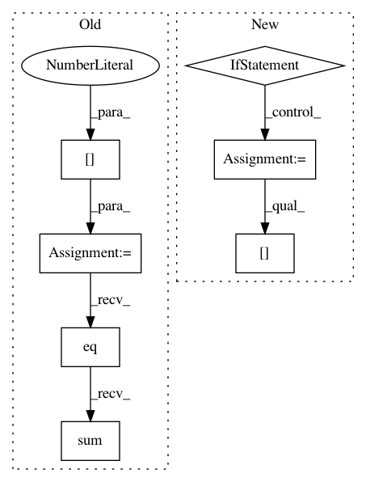

e583ae1925021107a0672e5cd4f586aef3e50452,pytorch/seg_metrics.py,PixelAccuracyMetric,update,#PixelAccuracyMetric#Any#Any#,47
Before Change
check_label_shapes(labels, preds)
for label, pred in zip(labels, preds):
pred = pred.max(dim=self.axis)[1]
label = label.max(dim=self.axis)[1]
self.sum_metric += pred.eq(label).sum()
self.num_inst += pred.numel()
def reset(self):
After Change
Predicted values.
check_label_shapes(labels, preds)
if self.on_cpu:
if self.sparse_label:
label_imask = labels.cpu().numpy().astype(np.int32)
else:
label_imask = torch.argmax(labels, dim=self.axis).cpu().numpy().astype(np.int32)
pred_imask = torch.argmax(preds, dim=self.axis).cpu().numpy().astype(np.int32)
acc = seg_pixel_accuracy_np(
label_imask=label_imask,
pred_imask=pred_imask,
vague_idx=self.vague_idx,
use_vague=self.use_vague,
macro_average=self.macro_average)
if self.macro_average:
self.sum_metric += acc
self.num_inst += 1
else:
self.sum_metric += acc[0]
self.num_inst += acc[1]
else:
assert False
def reset(self):
Resets the internal evaluation result to initial state.
In pattern: SUPERPATTERN
Frequency: 3
Non-data size: 7
Instances
Project Name: osmr/imgclsmob
Commit Name: e583ae1925021107a0672e5cd4f586aef3e50452
Time: 2019-03-27
Author: osemery@gmail.com
File Name: pytorch/seg_metrics.py
Class Name: PixelAccuracyMetric
Method Name: update
Project Name: osmr/imgclsmob
Commit Name: e583ae1925021107a0672e5cd4f586aef3e50452
Time: 2019-03-27
Author: osemery@gmail.com
File Name: pytorch/seg_metrics.py
Class Name: PixelAccuracyMetric
Method Name: update
Project Name: rusty1s/pytorch_geometric
Commit Name: e6484cd61d31a38f96729a70c1f461fc18b3d8ce
Time: 2017-11-08
Author: matthias.fey@tu-dortmund.de
File Name: examples/mnist_grid.py
Class Name:
Method Name: train
Project Name: rusty1s/pytorch_geometric
Commit Name: c6349f5f1a8955419d396c7ac74f782f6f00a443
Time: 2017-11-03
Author: matthias.fey@tu-dortmund.de
File Name: examples/mnist_superpixel_75.py
Class Name:
Method Name: train